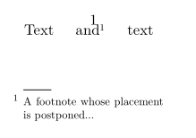

Syntax (autogenerated)
| \defineparagraphs[...][...][...=...,...] | |
| [...] | name |
| [...] | name |
| ...=...,... | inherits from \setupparagraphs |
Syntax
| \defineparagraphs[...][...,...=...,...] | |
| [...] | name |
| n | number |
| rule | on off |
| height | fit dimension |
| before | command |
| after | command |
| inner | command |
| distance | dimension |
| tolerance | verystrict strict tolerant verytolerant stretch |
| align | flushleft flushright righttoleft lefttoright middle |
Description
Examples
-
\setuppapersize[A5] % Source: ConText Manual ms-cb-en.pdf % Define a paragraph environment with 3 columns. % Insert a blank line just before and just after the environment. \defineparagraphs [mypar][n=3,before={\blank},after={\blank}] % The first column occupies 10% of the text's width and is rendered bold. \setupparagraphs [mypar][1][width=.1\textwidth,style=bold] % The second column occupies 40% of the text's width. \setupparagraphs [mypar][2][width=.4\textwidth] % The third column uses default settings. It will occupy % the remaining 50% of the text's width. \startmypar % begin the side-by-side paragraphs; start with the first one 1252 \mypar % switch to 2nd column Hasselt obtains its city charter from bishop Hendrik van Vianden. \mypar % switch to 3rd column Hendrik van Vianden was pressed by other towns not to agree with the charter. It took Hasselt a long period of time to convince the Bishop. After supporting the Bishop in a small war against the Drents, the charter was released. \stopmypar % end paragraph body
yields
-

Footnotes need special treatment, as follows.
-
\setuppapersize[A10,landscape] % when using footnotes, you have to use the following trick % (from Hans on mailinglist, Date: Tue, 15 Jun 2004 00:53:48 +0200) % but the names have changed since then from postponefootnotes % to postponenotes and flushfootnotes to flushnotes \defineparagraphs[Par][n=3] \starttext \startPar Text \Par and\postponenotes\footnote{A footnote whose placement is postponed...} \Par text \stopPar \flushnotes \stoptext
This gives:
- 
See also
- \setupparagraphs to setup the individual paragraphs/columns.
- \startparagraphs to start a paragraphs environment.
- \paragraph to switch to the next paragraph.
- \starttable and \starttabulate to create more traditional tables,
Help from ConTeXt-Mailinglist/Forum
All issues with:
- defineparagraphs on the mailing list (all results)
- defineparagraphs on the mailing list (subject only)
- defineparagraphs on stack exchange
- defineparagraphs in ConTeXt's source
|
|||||||||||||||||